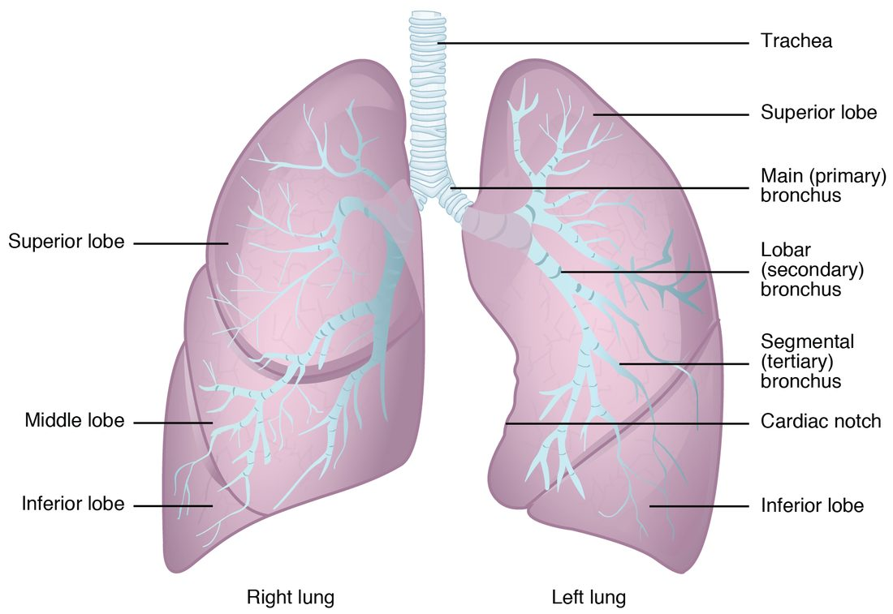
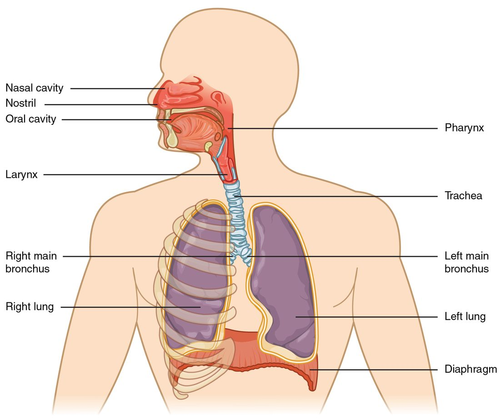
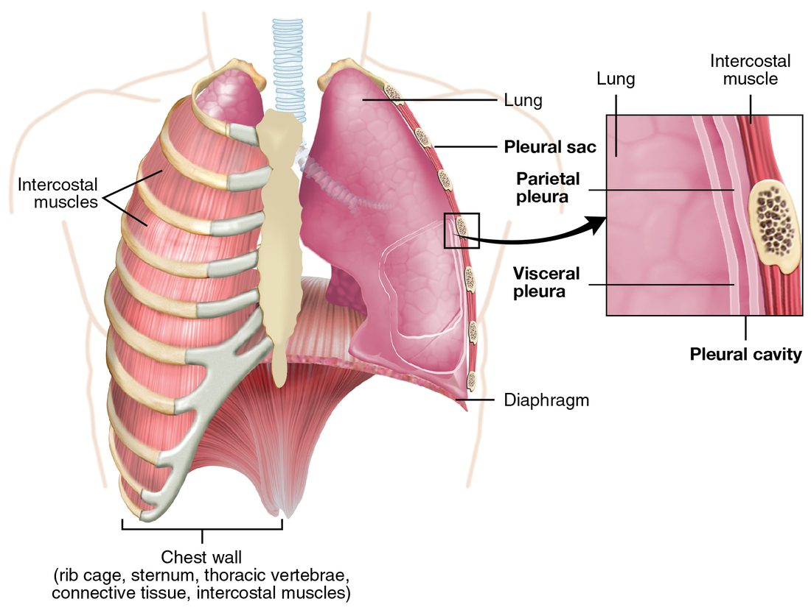

Below your larynx, the airway becomes a branching tree. The trachea divides into two bronchi, and those divide again and again, some 23 times, until the smallest branches end in hundreds of millions of alveoli, the tiny air sacs where your blood picks up oxygen. This page covers the anatomy of the lower respiratory tract and alveoli in the order air meets them: the trachea, the bronchial tree, the alveoli and the thin barrier between air and blood, then the lungs as organs, the pleura that wraps them, and their two blood supplies.
The trachea
Put a finger in the notch at the top of your breastbone and press gently backward. The firm, ridged tube you feel is your trachea, the windpipe. It runs from the lower edge of the larynx, at the cricoid cartilage (about the sixth cervical vertebra), down into the chest, where it splits in two at about the level of the sternal angle (the fourth to fifth thoracic vertebrae). It is about 10 to 12 cm long and about 2 cm wide.
Cartilage rings and the trachealis muscle
The trachea is held open by 16 to 20 tracheal cartilages: stacked C-shaped rings of hyaline cartilage. They are open at the back, where the trachea lies against the esophagus (Figure 1). A band of smooth muscle, the trachealis muscle, and elastic connective tissue span the gap between the ends of each C.
This arrangement solves two problems at once:
- The front and sides stay open. The rigid cartilage stops the trachea from collapsing, even when the pressure of the air inside drops.
- The back can give. When you swallow a large mouthful, the esophagus bulges forward into the soft back wall of the trachea. When the trachealis contracts, it pulls the ends of the C together and narrows the tube, which speeds up the air during a cough.
The layers of the wall
From the inside out, the tracheal wall has four layers:
- Mucosa: pseudostratified ciliated columnar epithelium with goblet cells, on a lamina propria. This is the lower half of the mucociliary escalator: its cilia sweep mucus up toward the larynx.
- A connective tissue layer with glands: seromucous glands here add watery mucus to the airway surface.
- The cartilage layer: the C-shaped rings and the trachealis muscle.
- Adventitia: the outer layer of loose connective tissue that binds the trachea to its neighbors.
The carina
Where the trachea divides, the last tracheal cartilage forms a keel-shaped ridge that points up into the airway between the two openings. This is the carina (Latin for keel). Its lining is one of the most sensitive places in the airway: a crumb or a suction tube touching it sets off a violent cough.
The bronchial tree
From the carina down, the airway branches like an upside-down tree, the bronchial tree (bronch- = windpipe). Follow it down (Figure 2):
- Primary bronchi (also called main bronchi; singular bronchus). The trachea splits into a right and a left primary bronchus, one for each lung. Each enters its lung at the hilum.
- Secondary bronchi (lobar bronchi): one for each lobe, so three on the right and two on the left.
- Tertiary bronchi (segmental bronchi): each supplies one bronchopulmonary segment, a wedge of lung with its own airway and its own branch of the pulmonary artery. Each lung has about ten.
- Smaller bronchi, which keep dividing.
- Bronchioles (-ole = small): airways narrower than about 1 mm, with no cartilage in their walls.
- Terminal bronchioles: the last airways of the conducting zone. Nothing beyond them is purely a pipe.
- Respiratory bronchioles: the first airways with a few alveoli budding from their walls, and so the start of the respiratory zone.
- Alveolar ducts: short passages whose walls are made almost entirely of alveolar openings.
- Alveolar sacs: grape-like clusters of alveoli that open into a common space at the end of each alveolar duct.

The right primary bronchus is the likelier target
The two primary bronchi are not mirror images. The right one is wider, shorter and more nearly vertical than the left, which has to angle further sideways to pass under the aortic arch and around the heart. So an inhaled object, such as a peanut or a tooth, is more likely to fall straight down into the right primary bronchus. For the same reason, a breathing tube pushed too far down the trachea usually ends up in the right bronchus, and only the right lung is ventilated.
An object lodged in a bronchus narrows it. Less air passes it, so less reaches all the lung tissue beyond, and a clinician listening there hears fainter breath sounds; air squeezing through the narrowed gap makes a whistling wheeze. A complete block stops air reaching that part of the lung at all.
How the walls change along the tree
As the airways get smaller, their walls change in a steady pattern:
| Trachea and primary bronchi | Smaller bronchi | Bronchioles | Respiratory bronchioles and beyond | |
|---|---|---|---|---|
| Cartilage | C-shaped rings | Irregular plates | None | None |
| Smooth muscle | Trachealis at the back only | A layer all the way round | A thick layer, relative to wall size | A few thin strands |
| Epithelium | Pseudostratified ciliated columnar | Pseudostratified ciliated columnar | Simple columnar, becoming simple cuboidal | Simple cuboidal, then simple squamous in the alveoli |
| Goblet cells | Many | Fewer | Few or none | None |
| Cilia | Yes | Yes | Yes, thinning out | None in the alveoli |
Two consequences follow:
- Bronchiole diameter is controlled by smooth muscle alone. With no cartilage to hold them open, bronchioles narrow when their smooth muscle contracts and widen when it relaxes. The next topic shows how that changes the ease of airflow.
- Goblet cells stop before cilia do. The last stretch of airway has cilia but little or no mucus-making, so any mucus produced is always carried up by cilia above it rather than stranded in the smallest airways.
Alveoli
An adult lung holds hundreds of millions of alveoli, each about 0.2 mm across: estimates for the two lungs together cluster around 480 million. Spread flat, their walls would cover somewhere between about 50 and over 100 square meters, depending on body size and on how it is measured; 70 m², about the floor of a small apartment, is a commonly quoted figure. The alveoli and the tiny airways that lead to them make up most of the lung, which is why lung tissue is light and spongy rather than a hollow bag.
Look at a respiratory bronchiole and its alveolar sacs (Figure 3). Each alveolus is a thin-walled cup, and the walls between neighboring alveoli carry a dense net of pulmonary capillaries and elastic fibers.

The cells of an alveolus
- Type I alveolar cells are simple squamous cells, spread so thin that, away from the nucleus, their cytoplasm is only a fraction of a micrometer thick. They form the gas-crossing surface.
- Type II alveolar cells are cuboidal cells scattered among them. They secrete surfactant (short for surface-active agent), also called pulmonary surfactant, onto the thin layer of water that lines each alveolus. Type II cells also divide and turn into new type I cells, so they repair the alveolar wall after injury.
- Alveolar macrophages (sometimes called dust cells) crawl over the inner surface of the alveoli and through their walls. They engulf dust, soot and microorganisms that reach the alveoli, the last line of defense beyond the reach of cilia. Laden macrophages are carried up on the mucociliary escalator or leave through the lymphatic vessels.
| Type I alveolar cells | Type II alveolar cells | |
|---|---|---|
| Shape | Simple squamous, extremely thin | Cuboidal |
| Share of the alveolar surface | About 95% | About 5% |
| Number | Fewer | More numerous |
| Main job | Form the thin wall that gases cross | Secrete surfactant, the lipid-protein film that lowers surface tension |
| Role in repair | Rarely, if ever, divide | Divide and replace lost type I cells |
| Part of the respiratory membrane? | Yes | No |
Surfactant
Water molecules at an air-water surface pull on each other, and that surface tension tries to shrink the surface. Inside a tiny, curved alveolus lined with water, it would pull the alveolus shut. Surfactant counters it. It is a film of about 90% lipids, mostly phospholipids, and about 10% proteins. Its amphipathic phospholipids sit at the surface with their tails in the air, push between the water molecules and weaken their pull on each other. Surface tension falls, and the alveoli stay open more easily. The next topic shows how this makes every breath take less work.
Type II cells start making surfactant late in fetal life and usually make enough only by about 34 to 36 weeks of pregnancy. That is why a baby born very early has stiff lungs whose alveoli collapse after each breath.
Alveolar pores
Small holes in the walls between neighboring alveoli, the alveolar pores, let air pass from one alveolus to the next. If mucus plugs the small airway leading to a group of alveoli, air can still reach them sideways through the pores from their neighbors.
The respiratory membrane
Oxygen in an alveolus has to reach a red blood cell in the capillary next door. The barrier it crosses is the respiratory membrane: the wall between alveolar air and capillary blood (Figure 4). Where it is thinnest, it has three layers:
- the flattened cytoplasm of a type I alveolar cell,
- the basement membranes of the alveolar cell and the capillary, fused into one,
- the flattened cytoplasm of an endothelial cell of a continuous capillary.
A thin film of fluid lines the alveolus on the air side. In total the barrier is only about 0.5 µm thick, roughly one fifteenth the diameter of a red blood cell.
You met the factors that set diffusion rate earlier: a larger surface area and a shorter diffusion distance both speed diffusion. The lung pushes both to the limit. Tens of square meters of surface and a barrier half a micrometer thick let oxygen and carbon dioxide cross in a fraction of a second, well within the time a red blood cell spends passing an alveolus. Anything that thickens the barrier, such as fluid or scar tissue in the alveolar walls, or that destroys alveolar walls and so shrinks the surface, slows that crossing. Later topics in this chapter use this.
The lungs
Your two lungs fill most of your thoracic cavity, one on each side of the mediastinum, the middle compartment that holds the heart, great vessels, trachea and esophagus (Figure 5).

Surfaces and hilum
Each lung is roughly a half cone:
- the apex, its narrow top, rises into the root of the neck, 2 to 3 cm above the clavicle;
- the base, its concave bottom, rests on the dome of the diaphragm;
- the costal surface (cost- = rib) faces the ribs;
- the mediastinal surface faces the mediastinum. In its middle is the hilum (a small mark), the doorway where structures enter and leave the lung.
The structures passing through the hilum are bound together as the root of the lung: the primary bronchus, the pulmonary artery, the pulmonary veins, the bronchial arteries and veins, autonomic nerves, and lymphatic vessels, with lymph nodes clustered around them.
Lobes and fissures
Deep grooves called fissures divide each lung into lobes, each with its own secondary bronchus:
| Right lung | Left lung | |
|---|---|---|
| Lobes | Three: superior, middle, inferior | Two: superior, inferior |
| Fissures | Oblique and horizontal | Oblique only |
| Secondary bronchi | Three | Two |
| Shape | Shorter and wider | Longer and narrower |
| Special feature | Sits higher over the liver, which pushes the right half of the diaphragm up | The cardiac notch, a hollow in its front edge where the heart lies |
| Size | Larger | Smaller |
The left lung's cardiac notch leaves room for the heart, which lies mostly to the left of the midline. Below the notch, a thin tongue of the left superior lobe, the lingula (little tongue), curves around the front of the heart.
Each lobe is further divided into bronchopulmonary segments, each served by its own tertiary bronchus and artery branch and separated from its neighbors by connective tissue. Because a segment is self-contained, a surgeon can remove one diseased segment and leave the rest of the lobe working.
The pleura
You met the pleural cavities as the two serous cavities around the lungs. The serous membrane that forms them is the pleura (Greek for rib or side). Think of pushing your fist into a soft, underinflated balloon: the balloon wraps your fist in two layers, one against your fist and one outside it, with almost nothing in between. The lung is the fist (Figure 6):
- The visceral pleura (viscer- = organ) covers the surface of the lung itself, dipping into the fissures between the lobes.
- The parietal pleura (pariet- = wall) lines the inside of the chest wall, the top of the diaphragm and the side of the mediastinum.
- The two layers are continuous with each other around the root of the lung at the hilum.
- Between them lies the pleural cavity, which in a healthy person is not an open space at all but a gap only about 10 to 20 micrometers wide, filled with a thin film of pleural fluid, a serous fluid, roughly 10 to 20 mL on each side.

What the pleural fluid does
- It lubricates. The two layers slide smoothly over each other as the lungs move with each breath.
- It holds the lung to the chest wall. A thin film of liquid between two smooth surfaces lets them slide but resists pulling them apart, just as two wet panes of glass slide easily but are hard to separate. So when the chest wall moves out, the lung surface follows it. The next topic shows how this turns movement of the chest wall into airflow.
- It separates the two sides. Each lung has its own pleural cavity, so an infection or injury on one side usually stays on that side.
Pleural pain
The parietal pleura is supplied by the intercostal and phrenic nerves and is very sensitive to pain. The visceral pleura and lung tissue have no pain fibers of that kind. When the pleura is inflamed (pleurisy), the roughened layers rub against each other, and you feel a sharp, stabbing pain that gets worse every time you take a deep breath. A clinician can sometimes hear the rub through a stethoscope. Excess fluid collecting in the pleural cavity is a pleural effusion; it presses on the lung and leaves less room for it to expand.
The blood supply of the lungs
The lungs are unusual: they receive two separate blood supplies, which do different jobs.
The pulmonary circulation: blood for gas exchange
You met the pulmonary circuit with the heart. The right ventricle pumps deoxygenated blood into the pulmonary trunk, which divides into the right and left pulmonary arteries. Their branches run beside the branches of the bronchial tree, all the way down to the capillary networks in the alveolar walls. There the blood picks up oxygen and gives up carbon dioxide, and the pulmonary veins carry it back to the left atrium. This circuit carries the entire output of the right ventricle at low pressure, about 25/10 mm Hg.
The bronchial circulation: blood for the lung's own tissue
The walls of the bronchi and bronchioles, the lung's connective tissue and the visceral pleura are living tissue that needs its own oxygenated blood. It comes from the bronchial arteries, small branches of the systemic circuit:
- The left lung usually has two bronchial arteries, which branch straight from the thoracic aorta.
- The right lung usually has one, which branches from an intercostal artery or from a left bronchial artery.
They follow the bronchial tree down to about the terminal bronchioles. Beyond that, the thin alveolar walls get their oxygen directly from the alveolar air and the pulmonary capillaries. Together they carry only about 1 to 2% of your cardiac output.
The bronchial veins drain the larger bronchi near the hilum into the azygos vein on the right and its partner, the hemiazygos system, on the left. Much of the bronchial blood, though, drains into small pulmonary veins instead and returns to the left atrium. That deoxygenated blood slightly dilutes the freshly oxygenated blood heading for the aorta, one reason blood in the aorta carries a little less oxygen than blood leaving the alveoli.
| Pulmonary circulation | Bronchial circulation | |
|---|---|---|
| Part of which circuit | Pulmonary circuit | Systemic circuit |
| Arteries | Pulmonary arteries, from the right ventricle through the pulmonary trunk | Bronchial arteries, from the thoracic aorta or an intercostal artery |
| Blood in the arteries | Deoxygenated | Oxygenated |
| Job | Exchange gases with alveolar air | Supply oxygen and nutrients to the airways, connective tissue and visceral pleura |
| Share of cardiac output | All of the right ventricle's output | About 1 to 2% |
| Drainage | Pulmonary veins to the left atrium | Bronchial veins to the azygos system, and partly into pulmonary veins |
Air to the alveoli and back
Put the two topics together and trace one breath in: nares, nasal cavity, nasopharynx, oropharynx, laryngopharynx, larynx, trachea, primary bronchus, secondary bronchus, tertiary bronchus, smaller bronchi, bronchiole, terminal bronchiole, respiratory bronchiole, alveolar duct, alveolar sac, alveolus. When you breathe out, air leaves by the same route in reverse, carrying the carbon dioxide it picked up in the alveoli.
The route has no separate way out, which is why some of the stale air from one breath is still in the airway at the start of the next. What makes air move along this route at all is the subject of the next topic: how the muscles of breathing change the size of the chest, and how the pleura makes the lungs follow.